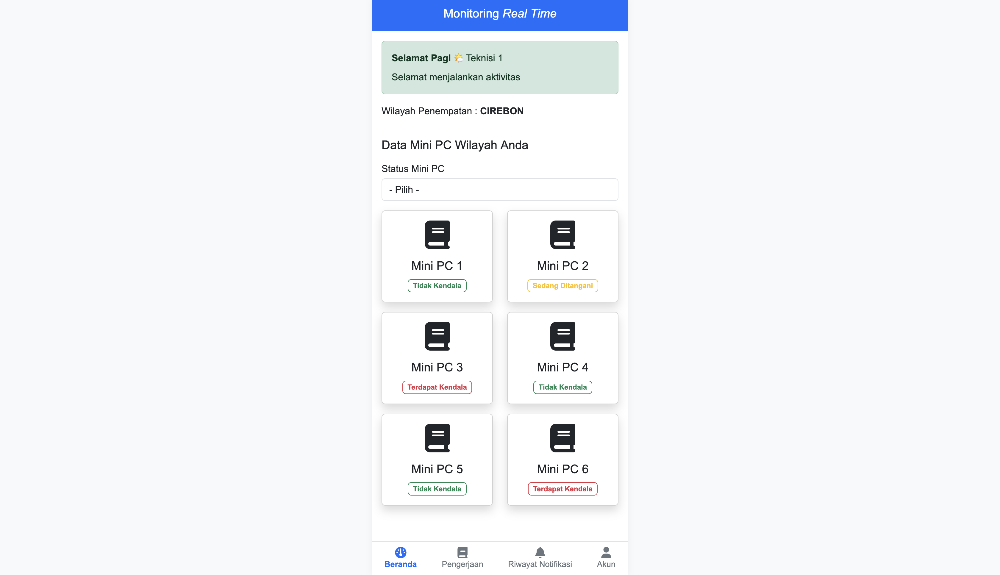

Portofolio Detail
Penjelasan Singkat Mengenai Monitoring IOT Mini PC

Monitoring IOT Mini PC
Sistem Monitoring IoT berbasis Mini PC ini dirancang untuk memantau perangkat dan
data secara real-time melalui dashboard web yang interaktif. Sistem ini mampu
mengumpulkan data dari berbagai sensor IoT, seperti suhu, kelembaban, dan status
perangkat, kemudian mengolahnya menjadi informasi yang mudah dipahami.
Data ditampilkan secara live tanpa perlu refresh halaman, dilengkapi dengan
visualisasi grafik, notifikasi kondisi abnormal, serta histori data untuk analisis
lebih lanjut.
Dengan dukungan Mini PC sebagai pusat kontrol, sistem ini memiliki
performa stabil, hemat daya, dan dapat berjalan secara terus-menerus (24/7).
Solusi ini sangat cocok digunakan untuk kebutuhan monitoring industri, smart home,
maupun lingkungan berbasis IoT yang membutuhkan kecepatan, akurasi, dan kemudahan
akses dari mana saja.
Saya selaku partner dari Tim Pengembang merasa senang sekali dengan adanya Dashboard ini. Dashboard ini sendiri digunakan untuk mempermudah Tim Teknisi lapangan dalam memantau apakah terjadi kendala atau tidak. Jika ada kendala, maka status akan berubah secara Real - Time dan ada Notifikasi Peringatan yang dimana fitur tersebut terkoneksi oleh Admin Cabang daerah nya masing-masing.
Galih Warsa
Tim Pengembang Alat Monitoring IOT Mini PC
Informasi Projek
- Kategori Freelance
- Studi Kasus CV Permata Gemilang Jaya
- Waktu Pengerjaan Maret 2025 - Juli 2025